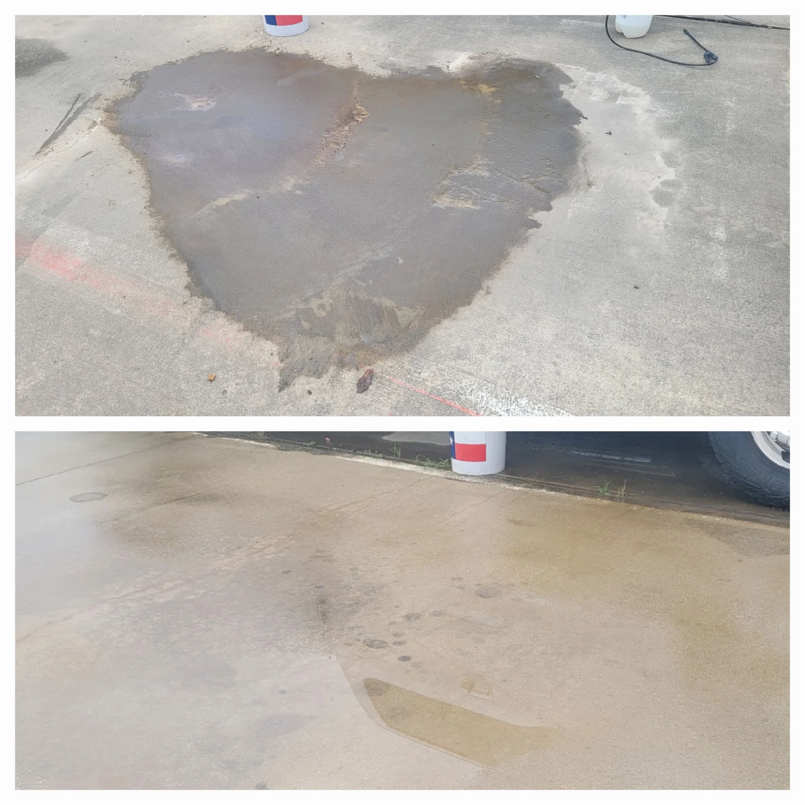
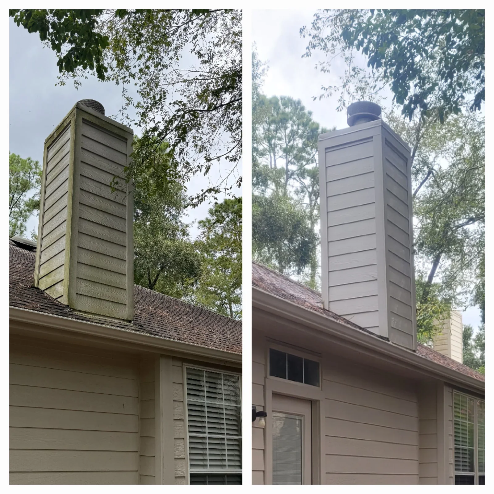
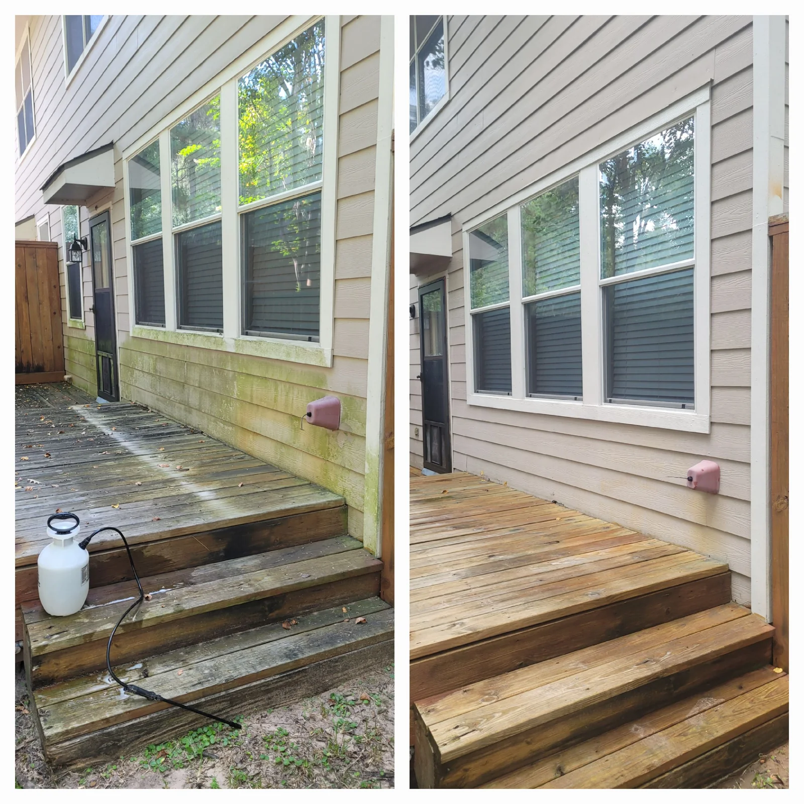
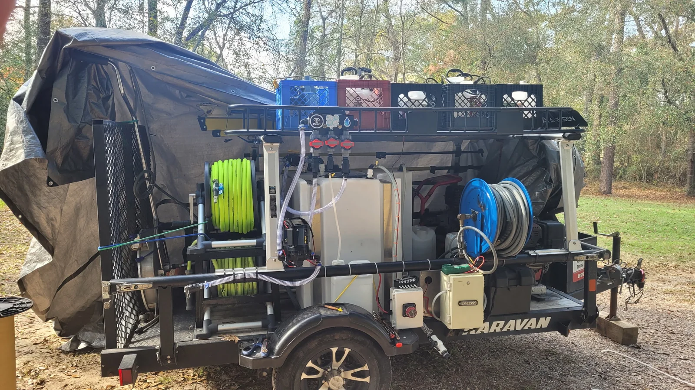
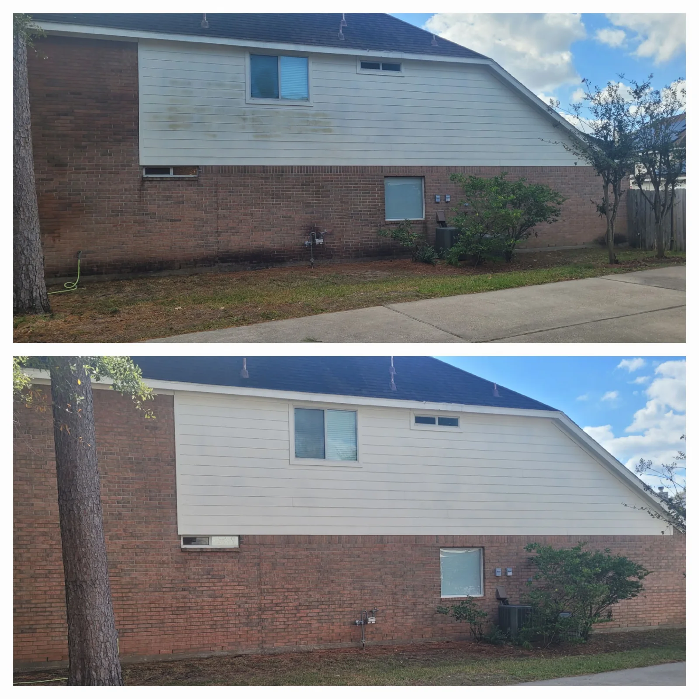
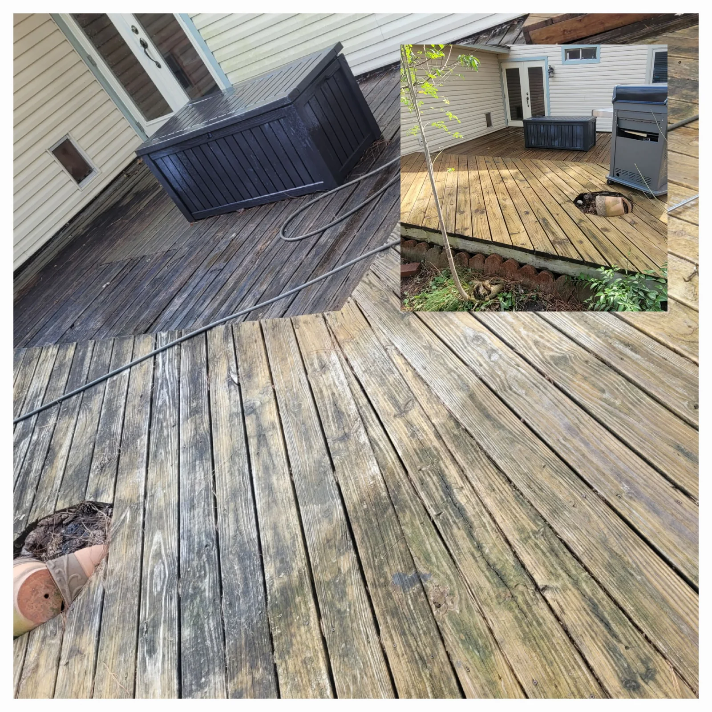

Six services.
One standard.
Soft washing, pressure washing, windows, gutters, concrete and commercial exteriors across Greater Houston, Texas.
(281) 235-7491
Soft wash or
pressure wash?
Both clean. Only one is safe for a finished surface.
Soft wash
Low pressure + solution
- Siding, stucco, brick and painted wood
- Roofs and shingles
- Fences and decks
- Anything with a finish to protect
Pressure wash
Higher pressure + surface cleaner
- Concrete driveways and sidewalks
- Pavers and aggregate
- Patios and pool decks
- Surfaces with no finish to damage
We name the method in the quote, so there is no surprise about how your house will be cleaned.

The safe way to clean a house: low pressure, the right mix, and time for it to work.
Most of what makes a house look dingy is alive — algae, mildew, pollen and spider webs. High pressure strips paint, forces water behind siding and etches stucco. A soft wash does the opposite: low pressure, a diluted cleaning solution, and enough dwell time for the growth to die and rinse away.
Vinyl, HardiePlank, stucco, brick and painted wood each get their own mix and their own tip. Plants are wet down and covered, windows are rinsed, and the finish stays exactly where it was.
- Low pressure on every surface
- Siding, soffits and eaves
- Roof algae treatment
- Windows and screens rinsed
- Landscaping protected
- Walkaround before we leave

Hard surfaces need pressure. They also need an even pass, clean edges and no zebra stripes.
Concrete holds red clay, oil, rust, leaf tannin and tyre marks, and each one needs a different pre-treatment. A single fast pass with a wand leaves stripes that never come out, especially on older concrete.
We use a surface cleaner for an even finish, pre-treat the stains, and rinse the edges and expansion joints by hand. Pavers get lower pressure with the joints protected, and we can quote a re-sand afterwards if they need it.
- Surface-cleaner finish
- Oil, rust and clay pre-treatment
- Edges and joints by hand
- Paver-safe pressure
- Surrounding surfaces rinsed
- Optional paver re-sand

Clean glass is the cheapest face-lift a house can get.
Windows are usually the first thing a visitor notices and the last thing anyone cleans properly. Spraying glass and wiping it dry just moves the dirt around. We wash, squeegee and detail the edges, then clean the frames, screens and tracks so the whole opening looks new.
Hard-water spots and construction residue get a different treatment. We work from the outside, protect the landscaping, and check every pane in daylight before we pack up.
- Exterior glass washed and squeegeed
- Frames and sills wiped
- Screens removed and cleaned
- Tracks vacuumed and wiped
- Hard-water spot treatment
- Daylight check on every pane

Clean gutters are a water-management job, not a cosmetic one.
A blocked gutter sends water down the fascia, behind the siding and toward the foundation. In a Houston downpour that can happen in minutes. We remove the debris by hand, flush every downspout and confirm water actually leaves the building where it should.
Debris is bagged rather than dropped in the beds, the fascia gets rinsed, and we report anything that looks like a loose hanger, a leaking joint or a downspout that needs re-routing.
- Debris removed by hand
- Downspouts flushed and tested
- Fascia rinsed
- Debris bagged and hauled
- Hanger and joint check
- Photo report of problem areas

Concrete should look the same colour from the street to the garage.
Houston clay, oak tannin and summer storms leave concrete stained and streaked. We pre-treat oil, rust and organic stains, then clean with a surface cleaner so the whole slab comes back evenly.
Expansion joints and edges are detailed by hand, and the surrounding lawn, beds and fencing are rinsed before we leave. Sealing can be quoted separately once the concrete is dry.
- Even surface-cleaner pass
- Oil and rust pre-treatment
- Joint and edge detailing
- Pool deck and patio safe
- Landscaping rinsed
- Sealing quote on request

Curb appeal on a calendar, not when someone finally complains.
Commercial exterior cleaning is about consistency. We build a scope per site — storefront glass and entry, sidewalks, dumpster pad, drive-through, building wash — and put it on a recurring schedule so it never becomes a crisis.
Early-morning and after-hours work is normal. One point of contact, a written scope, and a photo record after each visit. Restaurant operators and property managers get the same standard as a homeowner.
- Storefront glass and entry
- Sidewalks and dumpster pads
- Building and awning wash
- Recurring schedules
- After-hours availability
- Photo record each visit
Ready to make it
POP?
Send the address or call Charlie. One walkaround, a written quote, and a date — no deposit, no pressure.